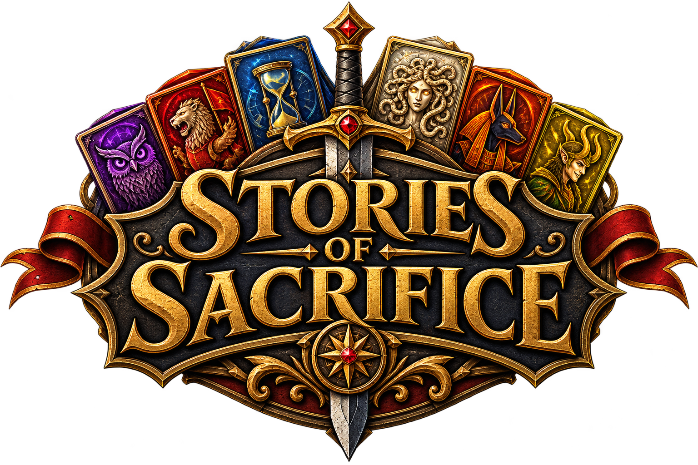
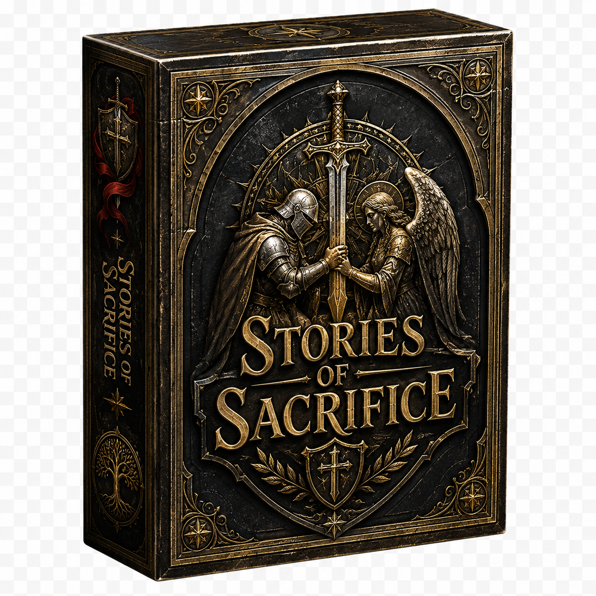

Prototype
The Hall of Legends
Rival
You
The CrossroadsRecruit with Grendels
Your HandClick a card to play it
A shared-market deck-building game

Choose four Chronicles. Build your deck, court the Legends, and be the first to claim 40 Prestige.
Choose exactly four Chronicles.
Play cards from your hand to gain Grendels and Power. Spend Grendels to recruit cards from the Crossroads. Spend Power to defeat enemy Champions; leftover Power becomes Prestige when your turn ends.
Actions go directly to your Rest pile after resolving. Only Champions and Guards stay on the field.
After use, one-time-use cards rest until turn end, then return to the Crossroads stock. They cannot be drawn again that turn.
The Common Purse is always available in the Hall: pay 2 Grendels to replace a Copper in your Rest pile with a Silver worth 2 Grendels. It uses your Legend invocation and has no Allegiance dial.
You may invoke one Legend each turn. A Legend facing you grants Allegiance. End a turn with all four Legends facing you for an immediate victory, or reach 40 Prestige and survive the rival's final response.
